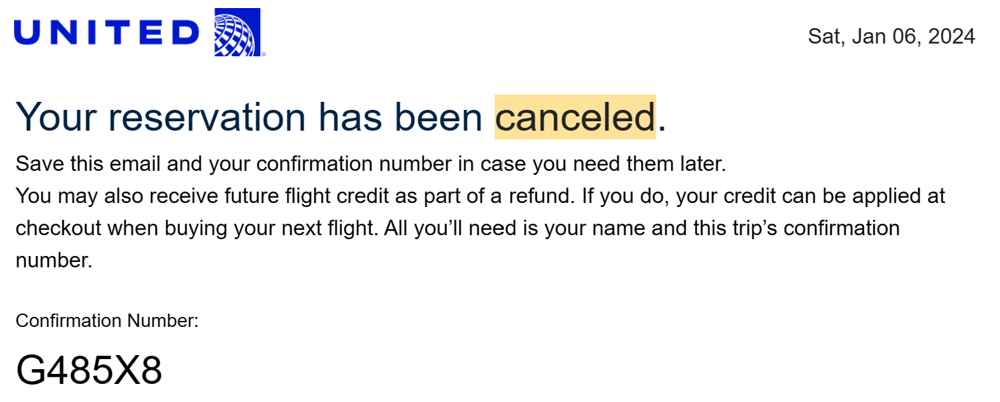
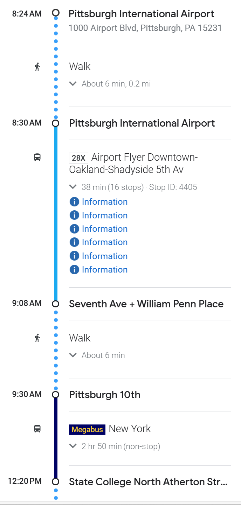

<h1>Flight delayed!</h1>

<hr/>
<h2>What to do next</h2>
<ol>
    <li>Stay at united club for breakfast, lunch and dinner until our rebooked flight come!</li>
    <li>Board the flight on 10:43 at Gate E6</li>
    <li>arrive at 7:16am</li>
    <li><a href="https://www.google.com/maps/dir/Pittsburgh+International+Airport+(PIT),+1000+Airport+Blvd,+Pittsburgh,+PA+15231/Megabus,+10th+Street+%23+118,+Pittsburgh,+PA/@40.4548882,-80.2141231,12z/data=!3m1!4b1!4m18!4m17!1m5!1m1!1s0x88345cc34ecd5b37:0xc812270d148d3f59!2m2!1d-80.2372941!2d40.4928542!1m5!1m1!1s0x8834f3e295cdf149:0xa272e32d1fd0e3ed!2m2!1d-79.9960555!2d40.4450028!2m3!6e0!7e2!8j1704612600!3e3?entry=ttu">
        take the 28x bus to pit transport center?
        </a></li>
    <li>Catch the <a href="https://us.megabus.com/account-management/my-tickets">megabus</a>
        I've booked on 9:30am 1/6</li>
    

</ol>
<a href="https://www.google.com/maps/dir/Pittsburgh+International+Airport+(PIT),+1000+Airport+Blvd,+Pittsburgh,+PA+15231/The+Station+State+College,+Toftrees+Avenue,+State+College,+PA/@40.746011,-80.3898396,8z/am=t/data=!3m1!4b1!4m18!4m17!1m5!1m1!1s0x88345cc34ecd5b37:0xc812270d148d3f59!2m2!1d-80.2372941!2d40.4928542!1m5!1m1!1s0x89cea8a1ff8333df:0x44df406df879661!2m2!1d-77.8868501!2d40.8237501!2m3!6e0!7e2!8j1704612600!3e3?entry=ttu">
    Gmap whole trip
</a>
